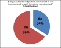
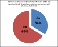

{kind=link}
{kind=link}
{kind=link}
{kind=link}
 

{kind=link}
{kind=link}
{kind=link}
Dezbatere publică- București, sediul Centrului pentru Jurnalism Independent, 14 aprilie 2011
Echipa afirmatoarea: Ionuț Tatu, studeant în anul III la Administraţie Publică (Universitatea Dimitrie Cantemir) și Daniel Barbu profesor la Facultatea de Ştiinte Politice, Universitatea Bucureşti
Echipa negatoare: Alexandra Drugan, studentă la Facultatea de Drept, Universitatea București și Corneliu Liviu-Popescu, profesor la Facultatea de Drept
Moderator: Liana Ganea, coordonator programe Active Watch
Liana Ganea: Vom începe dezbaterea. Am să încep prin a prezenta echipele. Lângă mine se află Alexandra Drugan, studentă în anul III la Facultatea de Drept, Universitatea Bucureşti. Coechipierul Alexandrei este Corneliu Liviu Popescu, profesor la Facultatea de Drept, fost agent guvernamental pentru Curtea Europeană a Drepturilor Omului. În dreapta mea se află echipa formată din studentul Ionuţ Tatu, student în anul III la Administraţie Publică(Universitatea Dimitrie Cantemir) şi Daniel Barbu, politolog, eseist, jurnalist şi profesor la Facultatea de Ştiinte Politice a Universităţii din Bucureşti.
AFIRMATOR 1
Ionuţ Tatu: Buna ziua! Ne aflăm aici pentru a discuta dacă dreptul la informare ar trebui să devină mai important decât dreptul la viaţă privată a demnitarului. Pledez pentru cazul afirmator şi de aceea voi prezenta situaţia actuală a ţării noastre. Într-o perioadă în care preşedintele ţării deţine anumite relaţii cu anumite persoane infame, sau candidaţi la preşedenţie decid că este necesar să se întâlnească cu alte persoane influente înaintea alegerilor, consider că cetăţeanul are dreptul de a cunoaşte mai bine viaţa demnitarilor. Aş dori să aduc în faţa dumneavoastra legea 544/2001, care priveşte informarea cetăţenilor asupra problemelor publice. În articolul 2, punctul b şi c, descoperim că cetăţeanul are dreptul să ceară informaţii privind autorităţile publice şi, de asemenea, orice informaţie personală legată de o persoana fizică identificată sau identificabilă.
Am să încep argumentarea prin a spune că ne adresăm această întrebare în două perioade. Prima perioadă este cea de dinainte de alegeri, deoarece atunci poporul iese la vot pentru a alege un demnitar. Votul este direct, liber exprimat şi secret, pe lângă universal şi egal. Însă cetăţeanul are dreptul la aceste trei funcţii. Consider că în clipa în care politicianul îşi prezintă “faţa” în cadrul campaniei electorale, cetăţeanul de fapt votează reflexia difuză a acesteia în mentalul, colectiv şi nu adevărata sa faţă. Astfel, consider că dreptul cetăţeanului de a vota este viciat, este constrâns de prezentarea difuză a politicianului respectiv, cetățeanul fiind privat de libera exprimare. Aş dori să completez şi cu o analogie, în care statul ar fi o firmă privată, iar cetăţenii sunt acţionarii acesteia. Cetăţenii doresc să aleagă o persoană care să se ocupe de administrarea acestei firme. În clipa aceea, cetăţenii cer un CV detaliat despre activitatea acestuia şi despre personalitatea potenţialului ales, pentru a cunoaşte următorul fapt - că el va lupta pentru interesele firmei, şi nu doar pentru propriul interes.
Al doilea argument survine în urma faptului că dreptul la informare este deseori invocat în timpul mandatului demnitarilor, atunci când anumite acte, spre exemplu cele de corupţie, delapidare etc. ies la iveală. Conform legii audiovizualului, media are dreptul de a furniza informaţii de interes public. E adevărat că mass-media, în contextul actual, a egalat interesul public cu interesul persoanelor care se luptă şi care se ceartă în tabloide. Interesul pecuniar a depăşit interesul general, şi doresc să subliniez acest lucru, deoarece nu putem avea încredere în mass-media, pentru că ea va folosi aceste informaţii cu scopul de a defăima persoane politice. Doresc să menţionez următoarea soluţie: Politicianul, pentru a putea fi un politician adevărat, trebuie să îşi prezinte adevărata faţă în faţa cetăţenilor, astfel încât aceştia să aleagă omul cu adevărat. Datoria politicianului este de a convinge cetățenii să îl aleagă.
Vă mulţumesc!
Chestionare încrucișată 1:
Corneliu Liviu-Popescu: Distinse coleg, aţi comparat administrarea treburilor publice ale cetăţii cu gestionarea unei societăţi comerciale, în raportul dintre acţionar şi administrator. Vi s-ar părea firesc ca la un interviu de angajare într-o companie privată, acţionarii să întrebe potenţialul viitor administrator care îi sunt orientările sexuale sau orientările religioase? Ori aceasta ar fi o discriminare?
Ionuţ Tatu: Sigur că o astfel de întrebare indică o discriminare, dar presupun că încercaţi să spuneţi că cetăţenii nu vor alege o persoană cu anumite orientări sexuale sau cu o anumită religie. Consider că dacă acest candidat se consideră capabil de a conduce un stat, iar interesul lui nu este unul personal, ci unul pentru societate, atunci el ar trebui să fie pus în acea funcţie. Orice fel de discriminare arată faptul că societatea este imorală, iar noi dorim să fim o societate morală şi etică, iar discriminarea nu îşi are locul în acest plan.
Alexandra Drugan: De ce ar trebui să cunoaştem informaţii numai despre politicieni, ținând cont că sunt şi alţi oamenii aflaţi în funcţii care presupun anumite responsabilităţi faţă de ceilalţi?
Ionuţ Tatu: Desigur, însă responsabilitatea politicienilor este mult mai importantă decât responsabilitatea unei firme sau a unui învăţător, a unui student sau a unui lucrător comercial. El se ocupă de interesul public şi general.
Alexandra Drugan: M-am bazat pe analogia pe care ai făcut-o.
Ionuţ Tatu: Ştiu. Am spus că nu se compară, însă politicianul este o persoană publică şi de aceea trebuie să fie deschis în faţa alegătorului.
Alexandra Drugan: Informaţiile abundente despre viaţa privată a unui politician ar presupune în mod necesar o responsabilizare a acestuia? Nu ar deveni mai viclean oare?
Ionuţ Tatu: Mass-media ar trebui să prezinte aceste informaţii fără a fi părtinitoare. De aceea politicianul ar trebui să fie acela care se prezintă şi care îşi va anunţa direcţiile şi interesele. Acesta ar fi un politician demn.
Alexandra Drugan: Cu atît mai mult ar putea să fie mai viclean.
Ionuţ Tatu: Da, dar putem fi siguri că cineva va observa acest lucru şi îl va putea contracara şi atunci politicianul respectiv va câştiga încrederea poporului. Pentru cinci ani de zile, ei nu pot fi atinşi de opinia publică, dar după acea perioadă altcineva ar putea apărea în locul lor.
NEGATOR 1
Alexandra Drugan: Astăzi voi prezenta discursul negator şi pentru aceasta aş dori să încep cu o clarificare a drepturilor care sunt puse în contradicţie, contradicţie pe care aş dori să o semnalez ca fiind una aparentă. Dreptul la informare al cetăţenilor trebuie să fie susţinut de acele informaţii care sunt strict legate de interesul public. Ce înseamnă interesul public? Nu este suficient ca publicul să “ceară” o informație pentru ca acel tip de informaţie să fie catalogat drept informaţie de interes public. Faptul că există o dorinţă foarte mare de cunoaștere a vieții de familie sau a vieții sexuale a demnitarului nu înseamnă că graniţele dintre viaţa publică şi viaţa privată trebuie schimbate în detrimentul celei din urmă. Cu privire la dreptul la viaţă privată, acesta are două dimensiuni. Una ţine de viaţa privată personală şi aici putem include viaţa de familie, libertatea sexuală, preferinţe, modul în care alege demnitarul să îşi petreacă timpul liber. A doua este viaţa privată socială. Aici trebuie să includem şi sfera profesională, tocmai sfera care ne interesează pe noi în ceea ce priveşte viaţa demnitarului, modul în care interferează alegerile lui private cu funcţia pe care o exercită. Ţin foarte mult la această clarificare pentru că în discursul oponentului meu nu mi s-a părut că există o strictă demarcaţie între ceea ce ţine de viaţa privată şi ceea ce ţine de faptele lui, care uneori sunt prejudiciabile pentru ceilalţi. Mă gândesc acum la infracţiunile pe care le-a numit, care lezează clar anumite valori şi care vor fi sancţionate conform unui sistem dat, pe care nu trebuie să îl discutăm în dezbaterea de astăzi.
Orice om, fără îndoială, are dreptul la viaţă privată. Chiar şi oamenii care sunt cunoscuţi marelui public trebuie să beneficieze de speranţa legitimă că sfera lor personală va fi protejată. Altfel, dacă am expune chestiuni care ţin de comportamentul în familie, comportamentul cu prietenii, hobbyuri, alegeri care ţin strict de persoana lor şi care ar trebui să ne fie indiferente pentru că nu au legătură cu activitatea profesională, s-ar crea un fel de inflaţie în presă şi spaţiul din mass-media ar fi ocupat cu chestiuni care ne-ar distrage atenţia. Astfel, nu am putea să luăm acea decizie conştientă despre care vorbea colegul meu, cu privire la cel care va guverna statul şi cel care ne va reprezenta interesele.
Încă un argument pe care aş vrea să îl pun în discuţie este legat de răul ireparabil care s-ar crea vis-a-vis de persoana demnitarului, prin dezvăluirea anumitor informaţii care, cu atât mai mult când sunt false, ar rămâne în conştiinţa publică, indiferent dacă ştirile false ar fi ulterior dezminţite. Sămânţa de îndoială rămâne, pentru că oamenii nu uită uşor şi nu au o încredere atât de mare în informaţiile mediate, pe care nu le pot culege cu propriile simţuri. Consecinţa şi mai gravă a acestui lucru este lipsa de încredere în instituţiile statului, care poate duce la absenteismul electoral şi la lipsa de interes pentru viaţa politică.
Acestea au fost argumentele mele, pentru care dreptul demnitarilor la viaţă privată nu ar trebui să fie pus în al doilea plan faţă de dreptul cetăţenilor la informare. Interesele personale trebuie să fie îmbinate cu interesul general într-o societate democratică.
Chestionare încrucișată 2:
Daniel Barbu: Ați spus că trăim într-o societate democratica, într-o societate pluralista, relativista, în care toate valorile sunt supuse dezbaterii. Cine mai defineşte într-o asemenea societate ce este public, ce este privat, atâta vreme cât fiecare dintre poziţii se poate argumenta raţional. Unde mai e graniţa atâta timp cât ea nu mai este evidentă? Cine mai defineşte atunci interesul general, dacă intră în contradicţie cu interese ale unor grupuri sau ale unor indivizi. A doua întrebare: aţi spus că viaţa privată are, la rândul ei, un versant social şi unul foarte personal, dar vă atrag atenția că trăim, mai ales în ultimii 30 de ani, într-un regim intens de personalizare a politicii, în care politicienii nu mai sunt recomandaţi publicului, aşa cum s-a întâmplat în ultimii 200 de ani, fie de statutul lor social, fie de apartenenţa la un partid binecunoscut, configurat clar în doctrină şi ideologie. Politica fiind personalizată, persoana se prezintă în faţa alegătorilor şi nu este indiferent pentru alegător dacă acesta este fidel sau nu în viaţa de familie, pentru că asta ar putea ţinti chestiuni de societate, cum ar fi dreptul la avort, şi ar putea indica celor care sunt pro-choice ca persoana respectivă, prin modul de viaţă, este mai degrabă pro-life. Este un simplu exemplu. Cu ce mijloace intelectuale fixaţi graniţa dintre viaţa privată socială şi cea personală?
Alexandra Drugan: În ceea ce priveşte interesul general - legiuitorul este acela care stabileşte limitele care pot fi puse unui drept al omului. Aceste limite nu se stabilesc în mod arbitrar, pentru că posibilităţile de a relaţiona cu ceilalţi, chestiune care ţine în mod special de dreptul la viaţă privată socială, ar fi cu mult diminuate. Legat de cea de-a doua întrebare, aţi pornit de la cele două dimensiuni ale dreptului la viaţă privată, personală şi socială, după care aţi invocat practicile curente din domeniul politic, tehnicile de manipulare.
Daniel Barbu: Am spus pur şi simplu că biserica la care te duci sau orientarea ta sexuală, care ar putea fi considerate date private, dacă eşti un om politic, pot fi extrem de relevante în ochii publicului pentru politicile publice pe care urmează să le promovezi de îndată ce vei avea posibilitatea să o faci. Atunci unde este graniţa? De ce nu ar avea dreptul publicul să ştie la ce biserică te duci? Sau dacă eşti monogam, bigam, heterosexual, pedofil etc.
Alexandra Drugan: Dar legătura de cauzalitate dintre opţiunile personale şi opţiunile pe care le politicianul le promovează în programul politic pe care şi-l asumă pentru a fi ales este atât de strictă şi de evidentă?
AFIRMATOR 2
Daniel Barbu: Argumentele mele au fost deja formulate în întrebările pe care le-am adresat părţii adverse şi nu vreau să vă ascund pentru că detest ipocrizia, o consider o formă de violenţă. Personal cred că viaţa privată trebuie apărată, deci vorbesc acum ca un avocat al diavolului.
Probabil că acum 30 de ani graniţele ar fi fost aproape spontan clare- nu pentru noi în această societate, pentru că acum 30 de ani aveam alt tip de cultură publică- dar pentru orice tip de societate democratică. Acum, aceste graniţe nu mai există. Nimic nu este mai eminent public decât piaţa privată a vedetelor. E suficient să ne uităm la televiziunile noastre pentru a vedea că orice eveniment politic, orice cutremur, orice dezastru nuclear păleşte în faţa divorţului dintre cineva şi altcineva. Fără îndoială că politica este personalizată, politicienii au învăţat de 30-40 de ani, de fapt au învăţat de la John Kennedy, să fie vedete media. În această calitate, ei au renunţat la viaţa privată. Viaţa privată face parte din profilul lor politic. Ea seduce, rareori îndepărtează. Un exemplu foarte elocvent este că în urmă cu şapte ani, venerabilul Gheorghios Papandreu a câştigat alegerile în fruntea Partidului Socialist Elen, la vîrsta de 80 de ani, partidul de opoziţie făcând campanie pe considerentul că venerabilul politician tocmai îşi lăsase nevasta pentru a se muta cu o tânără stewardesă de 30 de ani, ceea ce în ochii publicului elen a fost o dovadă de virilitate. Toată campania dusă împotriva lui Papandreu pe această temă de viaţă privată s-a întors împotriva celor care o plănuiseră, şi în ochii mai mediteraneeni ai grecilor, asta a fost o garanţie că Papandreu ar fi un prim-ministru extrem de energic, chiar dacă avea 80 de ani. Iată cum viaţa privată e utilizată de politicieni, nu trebuie să o citim doar în cheie defensivă, să ne imaginăm un paparazzi investind foarte mulţi bani şi energie, reuşind să desluşească taine fie de ordin financiar, fie de ordin sexual din viaţa politicienilor, ci adesea politicienii sunt cei care scurg aceste informaţii despre ei pentru că nu mai au nimic altceva să spună. Nu mai există niciun fel de politici care să fie definite în cheie ideologică, doctrinară, simplu spus într-un registru al valorilor, şi care să fie convingătoare indiferent de slaba performanţă sau precaritatea umană a celui sau celor care le formulează. Nu mai există politică în afara persoanelor care fac politică. Vedem foarte bine cu ochiul liber asta în România. Este suficient să ne uităm la o emisiune de televiziune în care ni se arată politicieni de top, preşedintele, primul-ministru, şeful opoziţiei, care în curs de un an şi-au schimbat opinia cu privire la acelaşi subiect de şapte sau opt ori. Asta nu îi împiedică să guverneze în continuare, să câştige în continuare voturi. România nu este deloc un caz excepţional. Francezii ştiau foarte bine atunci când l-au votat pe Sarkozy ca nu numai că acesta are o viaţă personală extrem de vibrantă, dar că este prietenul celor mai mari industriaşi francezi, şi că oamenii cu care se sfătuieşte cu privire la alegerile politice pe care le face nu sunt politicienii, ci cei trei sau patru şefi ai industriei franceze cu care pleacă periodic, câte o săptămână, în Marea Mediterană şi îşi face agenda pe următoarele şase luni. Francezii ştiau asta când l-au votat. Nu au fost deranjaţi nici de viaţa erotică vibrantă, nici de faptul că Sarkozy nu este decât purtătorul de cuvânt al celei mai restrânse camere de comerţ şi industrie din Franţa.
NEGATOR 2
Corneliu Liviu-Popescu: Doamnelor, domnilor, esenţa unei societăţi democratice rămâne viaţa privată. Dreptul fiecărui om de a fi lăsat în pace, dreptul fiecărui om la fericire. Credeţi sau nu, oamenii politici sunt şi ei oameni. Ne-am pierdut viaţa privată din diverse raţiuni. Oamenii politici au pierdut-o în numele interesului public, la aeroport, pentru securitate. Am devenit nişte mitocani. Mă duc cu o doamnă în aeroport şi ce fac de faţă cu o doamnă? Îmi dau sacoul jos, îmi dau pantofii jos, îmi dau cureaua de la pantaloni jos, nu mai am nici un fel de viaţă privată, ca şi cum m-aş pregăti să o violez acolo, în faţa agenţilor de securitate. Aceeaşi este situaţia oamenilor politici. Echipa afirmatoare e susţinătoare a unui punct de vedere care pentru mine este absurd, acela că avem dreptul să ştim orice despre oamenii politici, în numele interesului public. Deci eu vreau să ştiu acum ce poziţii preferă în dormitor primul-ministru, ce perversiuni sexuale are el cu soţia. Vreau să ştiu asta. În numele a ce? Dacă eu aflu asta e O.K. E dreptul meu să aflu. Haideţi să punem invers problema. Dacă e dreptul meu să aflu, înseamnă că este dreptul primului-ministru să îmi aducă la cunoştinţă. Să o facă în piaţa publică, voluntar. Nu l-am aresta pentru ultraj la bunele moravuri? Noi avem dreptul să aflăm, dar el nu are dreptul să vină să ne spună el singur ce face? Este absurd să cerem noi aceste informaţii. De ce vrem să le aflăm? Ca să ştim cum votăm? Să fim serioşi. De aceea fac audienţe posturile de televiziune în care se prezintă divorţul dintre academicieni? Ştiţi la ce oameni de cultură mă refer. Vreau să ştiu despre omul politic totul, ce poziţii preferă, pentru că altfel nu poate să mă conducă bine? N-ar fi mai bine să ştiu totul despre chirurgul care mă operează pe cord? La el nu mă interesează ce face în dormitor. Mă interesează să fie un bun profesionist. La fel ar trebui să mă intereseze şi la omul politic, să mă intereseze ce face pe autostrăzi. Scuzaţi-mă că folosesc cuvinte obscene într-o dezbatere publică. Ca să închei, vreau să dau cuvântul unor politicieni şi să vă arăt că dacă ei înşişi îşi expun viaţa privată, asta nu satisface interesul public. Doi oameni politici şi-au expus opiniile unul despre celălalt într-un mod extraordinar de academic şi asta nu a împiedicat naţiunea română, în deplină cunoştinţă de cauză, să îi voteze şi să fie astăzi amândoi europarlamentari. Am vrut să demonstrez nu numai că putem afla orice despre un om politic pentru că spun alţii despre el, dar şi prin ceea ce afirmă el însuşi. Cu toate acestea naţiunea nu a fost influenţată la vot. Eu cred că un om cu scaun la cap nu ar fi votat astfel de personaje pentru Parlamentul European. Dar cum astfel de personaje sunt în Parlamentul European, înseamnă că nu există nici cel mai mic interes public pentru astfel de informaţii din viaţa privată. Atunci continui să cred că dacă altceva justifică ingerinţele din viaţa privată, acest altceva nu îmi dă dreptul să neg viaţa privată chiar şi a politicienilor.
Discuție cu audiența:
Bogdan Drăghicescu: Pentru negatori: faptul că se află informaţii, fie din partea politicienilor, fie oferite de ziare, fie că sunt alţi politicieni care le spun despre ei, spuneţi că aceste informaţii nu ar influenţa opţiunea publicului. Asta înseamnă că respectivele informaţii nu sunt valoroase, sau că publicul nu este suficient de educat pentru a lua aceste informaţii în considerare şi poate, în timp, ar învăţa să ia şi aceşti noi factori în considerare în alegerile pe care le fac?
Alexandra Drugan: Interesul public pe care tot încercăm să îl invocăm are şi el anumite coordonate. Aceste coordonate nu ţin neapărat de nivelul de educaţie al receptorului, de disponibilitatea celorlalţi de a afla ceva despre noi înşine, ci acest interes public trebuie să fie circumscris funcţiei, pentru a putea lua o decizie în cunoştinţă de cauză, pentru a fi cetăţeni activi şi conştienţi. Informaţiile care cauzează o inflaţie s-ar putea să te bulverseze şi să nu ştii pentru ce optezi de fapt. Sau putem lua în considerare exemplul oferit de domnul profesor, unde informaţiile nu au avut niciun efect în rândul publicului. Cam acestea sunt opţiunile.
Bogdan Drăghicescu: Aş dori să contrez. De exemplu în Marea Britanie, un parlamentar a fost implicat într-un scandal de luare de mită de 20.000 de lire. Transformând sumele în lei româneşti constatăm că deşi este o sumă mare, am avut scandaluri mult mai semnificative la noi în ţară. În Anglia un parlamentar a demisionat, considerând că i-a fost compromisă funcţia. Acest lucru nu se întâmpla la noi în ţară. Opinia publică din Marea Britanie este mai educată din punct de vedere politic şi acest gen de scandaluri au o greutate mai mare în alegerile pe care le face publicul. La noi de ce nu s-ar aplica aceleaşi mecanisme?
Corneliu-Liviu Popescu: Îmi pare rău că trebuie să vă spun, dar glisaţi planurile. Ceea ce apărăm noi este viaţa privată. Faptul că un servitor al statului este corupt nu ţine de viaţa privată. Noi spunem că pentru oamenii politici viaţa privată este mult mai redusă. Potrivit jurisprudenţei Curţii Europene a Drepturilor Omului, oamenii politici se expun în mod conştient şi voluntar unei priviri mai atente din partea publicului şi a presei. Ceea ce subliniem noi este că deşi redusă, viaţa privată continuă să existe, şi că tot ceea ce justifică o ingerinţă în viaţa privată a oamenilor politici este interesul public. Dacă se dovedeşte un interes public, este permisă o ingerinţă. Dacă în spate stau alte motive decât interesul public, ingerinţa este nejustificată. Într-o amestecare de planuri pot să spun că „ce îmi e orientarea sexuală”, „ce îmi e pedofilia”. Nu. Este o mare diferenţă. Dacă este pedofil, asta mă interesează şi la omul politic, mă interesează şi la omul simplu de pe stradă, pentru că e infracţiune şi trebuie să răspundă. Dacă preferă sexul anal şi acest lucru îl preferă împreună cu partenerul şi o fac în dormitor, în dormitorul omului legea nu are ce să caute şi deci pe mine nu mă interesează chestiunea aceasta. Nu cred că este ceva de corupţie în ceea ce am spus. Noi separăm foarte clar planurile. Se pot afla informaţii despre oamenii politici, dacă acest lucru serveşte unui interes public. Ce rămâne strict în viaţa privată, nu are nici o legătură cu interesul public şi, pe cale de consecinţă, apărăm cu tărie respectarea vieţii private a oamenilor politici, cum apărăm cu tărie respectarea vieţii private a oricui.
Liana Ganea: În calitate de moderator, am să ridic o întrebare către sală. Ce este interesul public? Putem să îl definim?
Participant la dezbatere: Aş dori să adresez o întrebare. Dacă este o noţiune care variază în funcţie de tipicul unei societăţi sau este o noţiune obiectivă?
Corneliu Liviu Popescu: Îmi permit să vă sugerez. Întrucât interesul public justifică ingerinţa în dreptul nostru, deci serveşte la libertatea de exprimare, atunci ar trebui să adresaţi întrebarea celor care se servesc de interesul public pentru a ne călca în picioare dreptul la viaţa privată. Echipa adversă este mai în măsură să răspundă.
Daniel Barbu: Echipa adversă deja a sugerat un răspuns, care este unul formal. Interesul public este ceea ce legea defineşte ca atare. Fireşte, legile sunt adesea contradictorii. Politic vorbind, interesul public este definit de partidele politice. Partidele politice, într-o viziune tradiţională, ar trebui să susţină viziuni despre societate sau mai sociologic vorbind, viziuni despre legătura socială, care este calitatea legăturii între oameni. Ar trebui să aducă răspunsuri la această întrebare care pare banală, stupidă poate, dar care este extrem de serioasă: Cum putem trăi împreună? Ne deosebesc atâtea lucruri. Ne aseamănă foarte puţine lucruri, chiar şi în această sală. Cum putem, totuşi trăi împreună? Partidele tradiţionale, cele socialiste, cele creştin-democrate, cele liberale, veneau cu viziuni despre legătura socială, despre acel ceva care ne ţine împreună: cum îl definim, cum îl punem în legi, care la rândul lor vor fi temeiul juridic al acţiunilor guvernamentale, al politicilor publice. Asemenea partide nu mai există nicăieri şi îmi măsor cuvintele. Sigur, sunt partide prin Suedia, prin Germania, care mai păstrează un fel de amintire a ceea ce au fost ele cândva. În mult alte părţi precum Franţa, Italia, România, partidele nu mai reprezintă decât simple agregări de interese mai mult sau mai puţin conjuncturale. Atunci interesul public pur şi simplu nu mai poate fi definit sau, mai filosofic, el este definit în împrejurări cum este cea de faţă, care se reproduce în numeroase instanţe, iar Parlamentul ar trebui să fie instanţa exemplară în această privinţă. Interesul public se defineşte în înfruntarea dintre diferite viziuni mult mai numeroase, mai fragmentate, mai puţin articulate despre interesul public, care sunt de regulă purtate de politicieni, de reprezentanţi ai societăţii civile, de presă, şi în această înfruntare există o geometrie mereu variabilă, mereu mişcătoare. Interesul public nu mai este un basorelief antic, turnat în bronz sau sculptat de mâinile de aur ale lui Phidias pentru a fi prins în frontonul Parthenonului. Interesul public astăzi este ca o diagramă tibetană. Călugării tibetani îşi petrec o săptămână, două, trei sau chiar o lună pentru a scrie o mantră cu nisipuri colorate şi, de îndată ce au terminat, o şterg. După aceea vin alţi călugări, care scriu altă mantră, pe care o şterg ulterior. Deci nu mai avem în privinţa interesului public niciun templu, care să dureze 3000 de ani. Avem doar scrieri pe nisip, mai mult sau mai puţin pline de consecinţe în plan legislativ, în plan politic. Nu avem în societatea secolului XXI mai mult decît atât.
Corneliu Liviu Popescu: Întrucât unele opinii sunt foarte bine formate şi deci risc să pierd un vot pe care altfel nu aş putea să îl câştig niciodată, aş dori să îi pun o întrebare distinsului participant. Înţeleg că în numele interesului public vreţi să aflaţi foarte multe despre oamenii politici. Aş putea să vă întreb în circumscripţia dumneavoastră electorală în care locuiţi, cum îl cheamă pe deputatul şi cum îl cheamă pe senatorul care vă reprezintă în Parlament? Doar numele lor puteţi să le precizaţi.
Bogdan Drăghicescu: Foarte interesantă întrebarea. Nu ştiu să vă spun sincer.
Corneliu Liviu Popescu: Şi atunci de ce vreţi să ştiţi viaţa intimă, când nici măcar nu ştiţi numele alesului care vă reprezintă în Parlament, pentru care aţi votat uninominal. Interesul public vă justifică această curiozitate?
Bogdan Draghicescu: Răspunsul meu este următorul. La noi în ţară nu există o cultură atât de importantă a comunicării cu cei aleşi şi nu există o cultură atât de importantă a reprezentării oamenilor care au fost aleşi, deşi ar putea fi unelte importante să ştim dacă aleşii sunt oameni de familie sau dacă îşi înşeală promisiunile faţă de familie, pentru că este foarte posibil să se comporte la fel atunci când vor fi aleşi.
Corneliu Liviu Popescu: Ce tânăr sunteţi!
Bogdan Draghicescu: Dacă la noi în ţară nu există această cultură a alegerii oamenilor pe baza conduitei lor, politicienii vor fi aleşi în continuare, indiferent dacă au fost implicaţi sau nu în scandaluri politice. Aproape nimănui nu îi pasă de istoria politică a unui parlamentar, atunci este clar că un astfel de mecanism nu va face diferenţă. Ar putea fi necesar să ştim mai multe detalii din viaţa personală a unui parlamentar, însă aceste lucruri nu vor face în acest moment o diferenţă. Eu cred că este mai important ca societatea să evolueze până la acel punct în care acest lucru să facă o diferenţă.
Daniel Barbu: Şi eu tind, cu alte argumente, sa fiu de opinia dumneavoastră, în sensul că este foarte dificil, atâta vreme cât singurul element de coerenţă în lumea contemporană este persoana, individul. Pentru că societăţile noastre nu sunt dispuse să mai vadă alte regimuri de coerenţă, trebuie să ştim totul despre politicieni. Anâm să vă dau un exemplu. Nu este vorba despre sexualitate aici, deşi după cum aţi sugerat sexualitatea este importantă, pentru ca una este ca un politician să fie catolic şi să îşi iubească copiii, şi altceva este să ştii despre potenţialul ales că este homosexual. Atunci poţi să prezumi ca alegător că el va fi foarte liberal în privinţa anumitor legi de mare importanţă, dar am în minte un alt lucru. Ştiu că m-a tulburat filosofic imaginea unui ministru, fiind vorba despre Videanu, era ministru pe vremea aceea, când a fost oprit pe o stradă mergând cu 160km/h. Nu era autostradă, era o şesea obişnuită, unde viteza ar fi trebuit să fie de 90. E important să ştiu lucrul acesta, pentru că dacă un ministru încalcă cu intenţie Codul Rutier, ce-mi garantează că nu va călca cu intenţie Codul Fiscal. E şi el un cod adoptat de Parlament. Are acelaşi statut. Sunt aici jurişti care ne pot spune. Statutul codului este exact acelaşi. Este vorba despre o lege adoptată de Parlament, şi dacă cineva dispreţuieşte Codul Rutier, şi am această dovadă, înseamnă că eu pot să am puternice suspiciuni că acel ministru nu va avea niciun fel de respect pentru orice alt cod.
Corneliu-Liviu Popescu: Sunt perfect de acord, doar că asta nu-i viaţă privată.
Raluca Petrescu: eu am o întrebare uşor tehnică.
Liana Ganea: Vă rog să vă prezentaţi.
Raluca Petrescu: Raluca Petrescu, membru ARDOR de prin 2000 nu mai contează cât, şi actualmente masterandă a Facultăţii de Filosofie pe etică aplicată. Întrebarea mea tehnică vizează un mecanism, mărul discordiei despre care vorbea Bogdan: şi anume dezbaterea publică. Eu sunt perfect de acord cu opinia formulată de domnul profesor astăzi - că există o zonă profund intimă în viaţa fiecărui om, fie el medic, politician, comisar al Uniunii Europene sau mai ştiu ce Înalt Prelat. Exist o zonă intimă. Însă, faptul că această zonă intimă nu este respectată şi faptul că nu putem vorbi, cel puţin în spaţiul românesc de o cultură politică, de existenţa unei educări a opiniei publice, nu este mai degrabă un rezultat al faptului că nu avem o dezbatere publică instituţională, o dezbatere publică profesională...că dezbaterea publică e ceva ce se face din condei: toată lumea se pricepe la dezbatere publică, am asistat la ultimele alegeri prezidenţiale la forme de dezbatere publică; nu ştiu în ce măsură ca alegător am fost sau nu multuţmit de forma respectivă de dezbatere publică, dar oare, elementul central nu este în tehnicizarea, în instituţionalizarea unei forme perfectate cât mai mult posibil, aşa cum este probabil în societatea britanică, a dezbaterii publice? Eu mă gândesc întracolo. Cam asta e poziţia mea. Către acolo ar trebui să ne îndreptăm atenţia...nu dacă o persoană îşi încheie căsnicia după X ani. Sunt opţiuni în viaţa fiecăruia şi poate e nedrept să judecăm ieşit din context de ce un om îşi închide sau nu o căsnicie după x ani. Într-adevăr, anumite elemente care ţin de orientarea sexuală, de religie, dacă este pro sau contra legiferarării avortului sunt importante în ceea ce priveşte un om politic, dar nu mai mult ne interesează forma în care se prezintă aceste informaţii, şi anume dezbaterea publică?
Liana Ganea: Şi asta facem noi acum o dezbatere publică privind viaţa privată versus dreptul la informare..
Raluca Petrescu: Perfect de acord. Dar de câte ori vedem asemeni dezbateri publice? De exemplu, există o lege în România care obligă fiecare legiuitor să iniţieze o dezbatere publică pentru fiecare intenţie legislativă. După cunoaşterea mea, nu există asemnea dezbateri publice. Nu trebuie să ne orientăm privirea şi către zona respectivă?
Liana Ganea: Avem altă intervenţie aici - domnişoara în roşu.
Flavia Ştefura: (Studentă în anul IV la Facultatea de Drept, a Universităţii din Bucureşti). Aş fi vrut să-l întreb pe Bogdan: ce te face să crezi că dacă un politician şi-a abandonat familia, dar el este un excelent specialist în domeniul în care este pus să conducă ţara, de exemplu dacă este pus la Agricultură și este un excelent manager, ce te face să crezi că el nu-şi va reprezenta bine interesele, odată ce şi-a înşelat nevasta? De ce faci analogia asta? De ce te aştepți ca dacă el şi-a înşelat nevasta, să te înşele şi pe tine? De ce e prezumţia asta? De unde vine?
Bogdan Drăghicescu: Flavia, eu văd lucrurile în felul următor: există specialişti, există profesionişti în domeniul lor de activitate şi mi-ar plăcea să cred că aceştia ne conduc. De cele mai multe ori nu este cazul. Dar presupunând că aceştia totuşi ne conduc, plecăm de la această prezumţie de nevinovăţie, prezumţie de profesionalism. Chiar dacă ne-ar conduce nişte profesionişti, este destul de greu de crezut că un om reuşeşte să-şi separe perfect viaţa personală, nu spun viaţa privată, ci de viaţa personală, nu vorbim despre ce face el efectiv cu familia lui şi aşa mai departe. Este destul de greu ca acela să-şi separe viaţa personală de viaţa profesională. Va exista acolo la graniţă o îmbinare. Dacă de o parte se află lucruri pe care în general lumea le-a considerat de încredere, dar pe de o parte se află un om care îşi înşeală familia, îşi înşeală nevasta sau face lucruri care nu sunt cinstite, atunci putem avea nesiguranţe când vrem să-i dăm încrederea pentru a manageria banii noştri, pentru a manageria economia noastră, pentru a manageria legile şi aşa mai departe. Putem avea neîncredere. Şi atunci dacă eu am de ales între un om faţă de care am o oarecare neîncredere şi un om faţă de care nu am acea neîncredere, atunci decizia mea ar putea să încline în direcţia aceea, dacă toate celelalte criterii de competenţă, de şcoală şi aşa mai departe sunt egale. În punctul ăsta faci o diferenţă. N-am văzut în această dezbatere, poate clarificăm în continuare care sunt exact acele elemente ale vieţii personale care contează. Pentru că, după cum spunea şi domnul negator, poziţiile preferate s-ar putea să nu fie de interes. Pe de altă parte, orientările religioase ar putea fi relevante, având în vedere că România, de exemplu, este o ţară puternic ortodoxă.
Flavia Ştefura: Stai puţin...Religia, de când este legată de conducerea Statului? Religia şi Statul...statul nostru este laic.
Bogdan Drăghicescu: Da, dar sunt decizii care ţin cont de chestia asta. Să ne gândim la Catedrala Mântuirii Neamului. S-ar putea ca un politician catolic să nu considere atât de importantă o catedarală a mântuirii neamului ortodoxă. Mai multe informaţii ar putea să dea o idee despre ce urmează...
Corneliu Liviu Popescu: Adică să punem oamenii în categorii să înţeleg. Am avut doi miniştri de externe care au făcut chestia asta. Unul care voia să cumpere în deşert teren, să facă acolo un lagăr unde să ducă romii să-i supună la muncile cele mai grele de exterminare, e profesor la Universitatea din Bucureşti. Şi altul care a spus, şi este acum în funcţie, că romii sunt predestinaţi genetic să fie infractori. Păi dacă judecăm oamenii după categorii, înseamnă că în clipa în care vedem un rom pe stradă, scoatem pistolul şi îl împuşcăm şi spunem că eram în legitimă apărare, pentru că probabilistic, mi-au spus doi miniştri de externe ai României, astea sunt şansele. Scuzaţi-mă, dar asta deja depăşeşte viaţa privată şi intră în zone pe care istoria le-a cunoscut, şi nu sunt chiar zone luminoase în istorie.
Mihaela Gherghe: (Studentă în anul I la Facultatea de Drept din cadrul Universităţii Bucureşti). Întrebarea mea era pentru susţinătorii poziţiei afirmatoare, şi anume: dacă prin ingerinţele acestea în viaţa privată nu există riscul să oferi nişte false criterii? Nu mă refer la cazul în care orice criteriu de competenţă, de profesionalism sunt la egalitate, ci atunci când în detrimentul unui profesionalism sau al unor studii superioare alegem o personă pe criteriul faptului că una este homosexuală şi alta heterosexuală.
Ionuţ Tatu: Eu personal cred că nu ar trebui să facem aceste mici categorisiri, gen homosexual, fiindcă orientarea sexuală nu are nici o legătură probabil cu caracterul unei persoane şi relaţiile acesteia cu alte persoane. Însă în multe alte zone, o echipă nu este formată numai din competenţe, specializări şi aşa mai departe. Contează foarte mult caracterul şi persoana respectivă. Şi de aceea, când politicianul îşi prezintă cu adevărat caracterul, el va intra într-o echipă, care este formată din Preşedinte, Guvern, miniştri, parlamentari.Va trebui să intre în acea echipă şi să arate că este un adevărat luptător pentru anumite idei şi principii. El într-adevăr poate să fie specialist, specialişti sunt mulţi. Însă persoane cu caracter sunt puţine. Şi trebuie să le găsim, şi acelea să fie promovate într-un fel sau altul.
Mihaela Gherghe: Întrebarea mea mergea tocmai către direcţia asta. Dacă prin excesul ăsta de informaţie putem într-adevăr identifica caracterul sau doar facem categorisiri. Dacă știm că este homosexual, avem o direcţie în a-i justifica caracterul? Sau poziţiile pe care le preferă, pot fi ele considerate un criteriu relevant? Pentru că poziţia pe care o susţineai era că trebuie să ştim practic absolut tot. Aici incluzând şi orientarea sexuală.
Ionuţ Tatu: Desigur, nu puteam într-un timp atât de scurt să enumăr toate cerinţele, toate particularităţile fiecărei persoane, însă consider că trebuie să apelăm la caracterul persoanei. După cum am zis, contează direcţia acestuia şi principiile acestuia.
Participant din sală: Şi care ar fi noţiunile relevante ale caracterului? Aţi afirmat o noţiune care nu ar fi, şi anume viaţa sexuală. Care alte noţiuni nu ar fi relevante? Şi care ar fi? Care ar fi separaţia?
Daniel Barbu: Eu cred că lucrăm cu cuvinte prea grele. Cineva făcea apel la dezbateri. Nu trăim într-o cultură a dezbaterii niciodată, e un fenomen de 21 de ani. Nu suntem nemţi. Ei au Streitkultur de pe vremea Reformei, oamenii au obiceiul să se înfrunte, să-şi înfrunte opiniile, să şi le confrunte. Noi nu trăim într-o asemnea cultură şi, cel puţin în ceea ce mă priveşte, nici nu voi trăi în timpul vieţii mele. Folosim deci cuvinte prea grele dacă le luăm în serios. “Idee”, aceasta vine ca şi multe alte cuvinte moderne de la rădăcina „ecrino”, a trece prin sita, cum trec femeile prin sită mălaiul. De la asta vine, ăsta este verbul. Ce trece prin sită când aflăm ceva despre un politician? Când preşedintele actual a fost văzut în campanie lovind un copil, şi au fost martori care au confirmat, primul-ministru în funcţie. Cine l-a judecat pe Traian Băsescu? Cine a trecut prin sita propriei conştiinţe, a propriului caracter? Nimeni. Cine l-a trecut pe Tăriceanu prin sită? Pentru că dacă Tăriceanu ar fi avut caracter, în 2004, chit că se prefigura poziţia lui de prim-ministru, trebuia să apară la televizor şi să spună: candidatul pe care eu îl susţin, deşi mai sunt 3 zile până la alegeri, e un bătăuş de copii. Eu, Călin Popescu Tăriceanu, nu pot susţine un asemenea candidat. Un automobil întreg de liberali şi PD-işti, un autocar nu automobil, a fost de faţă la acest eveniment. Nici unul nu l-a denunţat. Deci ce trece prin sită? Spuneţi “informaţii” şi, mă rog, noi am afirmat dreptul la informare. Dacă iar luăm cuvântul prea în serios, el este foarte aristotelic. Asta înseamnă că ceea ce noi primim sau aflăm informează propria noastră inteligenţă. Ne informează alegerile, le pune într-o anumită formă, aşa cum punem gipsul într-un mulaj. Ori noi nu avem de-a face în prezent, inclusiv în viaţa politică, nicăieri în lume, cu informaţii. Cu lucruri menite să ne modeleze în profunzime, aşa aristotelic: materie, formă, ţineţi minte .... Noi avem de-a face cu televizorul: două planuri. Nimic n-are profunzime, de aia mai corect e să spunem „ştiri despre”. Sunt news acum, peste un sfert de oră sunt alte news. Nimic nu ne mai informează. Ne completăm imaginea despre ceva. Avem un subiect de conversaţie, inventăm teme noi, pixelul albastru, nu?! Şi apar oameni foarte serioşi, de altfel, care ne explică cum e cu pixelul albastru, apelând la regulile fizicii, cu braţul care se mişcă...în fine ..sunt imagini! Ne distrăm. Politica face parte din showbusiness, până la urmă. Şi peste tot, gândiţi-vă cu ce şi-a informat (ca să nu dăm exemple româneşti) Obama alegătorii, pe care i-a dezamăgit, nici nu e clar dacă va mai candida? „Yes We Can!” niciodată n-a spus ce putem face. Da, putem face ceva. Ce? Să ajungem la Casa Albă şi om vedea. „Yes We Can!”, ţineţi minte? „Yes We Can!” şi apăreau vedete hoolywoodiene, cântăreţi, spuneau „Yes We Can!” şi toată America era în lacrimi „Yes We Can!” Şi ce putem? E showbusiness. S-a dus la Casa Albă, primul lucru - a trimis trupe în Afghanistan. Al doilea lucru - a sabotat proiectul democrat de asigurări generale publice de sănătate. Nu? Ca să facă pe plac ca şi Sarkozy marilor companii de asigurări care conduc America. Putea să facă asta şi George Bush. Orice republican făcea la fel de bine tot ce a făcut Obama. E vorba doar de spectacol. Alegerile sunt mai tâmpite ca la noi, cu talent şi vedete hollywoodiene, mai bine puse în scenă, sunt pur şi simplu spectacole ale cetăţeniei democratice, dar nu dau substanţă, nu dau criterii cetăţeniei democratice, nu informează cetăţenia democratică şi sunt ştirile zilei. Nu?! Mai mult vreau să vă spun: la penultimele alegeri din Marea Britanie asta a fost fabulos, când a câştigat ultima dată Tony Blair. Știţi, după un an şi-a lăsat mandatul în favoarea lui Gordon Brown. În noaptea respectivă a fost ultimul episod din Big Brother. A avut o audienţă numărată în milioane de telespectatori mai mare decât participarea la vot. Asta ne spune ceva despre vot, inclusiv în ţări pe care avem tendiţa să le admirăm, Marea Britanie, unde camere de luat vederi sunt în fiecare colţ, și vor intra în dormitor, domnule profesor, în fiecare dormitor din Marea Britanie, vă promit, în timpul vieţii voastre. (Râsete) Nu? Ştiţi că acum recidiviştii în Marea Britanie sunt cipaţi. Te uiţiepe ecran, eşti poliţist şi te uiţi unde e fiecare recidivist.
Corneliu Liviu Popescu: Noi ne chinuim încă cu vacile.
(Râsete)
Daniel Barbu: Sau cu câinii de pe stradă. Şi în fiecare colţ, până şi în sate prăpădite, în colţuri de staule sunt camere publice de luat vederi (CC TV). E Big Brother.
Corneliu Liviu Popescu: Spre deosebire de dumneavoastră, noi nu vrem să trăim într-o astfel de lume.
(Râsete)
Daniel Barbu: Mă scuzaţi.
Corneliu Liviu Popescu: Eu am nevoie de voturi acum.
Liana Ganea: Am două înscrieri la cuvânt.
Bogdan Duca (doctorand ştiinţe politice): Aş dori să propun o distincţie necesară aici. Distincţia între două tipuri de demnitari. Noi totuşi vorbim de două tipuri de demnitari politici: demnitarii aleşi şi demnitarii numiţi. Ori confuzia dintre aceste două tipuri de demnitari este, cred eu, foarte importantă şi poate spune multe chiar despre subiectul acestei dezbateri. În ce sens? Demnitarii aleşi sunt aleşi nu pe criterii profesionale. Acest lucru nu se întâmplă aproape niciodată. Nu ne alegem parlamentarii, nu ne alegem consilierii, nu ne alegem Preşedintele pe baza CV-ului său, pe baza experienţei sale profesionale, cât pe baza reprezentativităţii sale. Iar criteriul alegerii este unul al reprezentativităţii. Cu cât obţine mai multe voturi cu atât este mai reprezentativ şi îndreptăţit să ocupe un fotoliu de ales al naţiunii române, de reprezentant al României, al întregii Românii, un lucru iarăşi explicat în cazul parlamentarilor sau în cazul Preşedintelui, lucru pe care îl au în comun. Aceste persoane alese, sunt alese pentru că în ele se regăsesc într-o formă sau alta alegătorii lor, şi implicit marea majoritate a alegătorilor din circumscripţia respectivă sau de pe întregul teritoriu al României. Ca urmare, sunt foarte importante pentru acest electorat informaţiile ce ţin cumva de sfera privată. Ce ţin de felul de a fi a persoanei respective. Pentru că persoana respectivă a fost aleasă pe acest criteriu: al reprezentativităţii. El este expresia, este vocea felului de a fi al alegătorilor săi în instituţia pe care o reprezintă. A doua categorie de demnitari sunt tehnocraţi. Tehnocraţi numiţi pe criterii politice. Bunul agronom dat ca exemplu de Flavia. Este numit ministru să spunem, conduce Ministerul Agriculturii. Criteriul pentru care a fost numit de partidul său pe criterii politice este acela că este un bun administrator şi un bun specialist în domeniu său, sau se presupune că aşa ar fi. Ca urmare, impactul vieţii sale private asupra activităţilor sale publice este egal cu zero. Şi normal, nici măcar o dezvăluire, de orice natură ar fi ea, nu ar trebui să-i afecteze poziţia publică în care acesta de găseşte. Însă repet, acelaşi lucru nu este valabil pentru politicienii aleşi. Un politician ales este, repet, expresia dorinţelor, speranţelor electoratului său. Dorinţe şi speranţe care sunt subiective. Care se pot pierde într-o lozincă chiar de genul „Yes We Can!”.
Corneliu Liviu Popescu: Regret, dar nu pot să împărtăşesc punctul dumneavoastră de vedere, pentru că ar însemna să pun în balanţă cel mai umil consilier local, şi vă rog să mă credeţi că nu cunosc nici măcar un singur nume din consiliul sectorului 3 în care domiciliez. Habar nu am cum îi cheamă. Dar spuneţi că e ales, deci trebuie să ştiu despre el tot. Şi trebuie să fie şi oglinda mea. Deputatul din circumscripţia mea, care este exact oglinda mea, este domnul Silviu Prigoană. Dar pe de altă parte, unul numit e un tehnocrat pe competenţe profesionale. Păi atunci primul tehnocrat al ţării e primul-ministru, că el nu e ales. E greu să cred că mă interesează despre un consilier local din comună şi nu mă interesează nimic despre primul-ministru, pornind de la ideea că el este un tehnocrat, un bun administrator şi pe el nu-l interesează nimic altceva. Deci funcţiile politice nu sunt tehnocrate, indiferent de modul de numire. În măsura în care membrul Guvernului este o funcţie politică, nu-i cere nimeni să dea un concurs, nu interesează pe nimeni competenţele profesionale, poate să aibă două clase, el poate deveni prim-ministru.
Bogdan Duca: Cel puţin formal, acest concurs se dă. Fiecare ministru este audiat de o comisie parlamentară, iar Guvernul întreg este trecut prin votul unui Parlament. Există o dinamică.
Corneliu Liviu Popescu: Îmi pare rău, vă contrazic. Atunci aţi putea spune exact acelaşi lucru si dincolo - că fiecare candidat la alegeri dă un concurs în faţa electoratului. E supus întrebărilor şi aşa mai departe, toate în campania electorală. Votul din Parlament la investitura Guvernului n-are nimic de a face cu dimensiunea competenţelor profesionale, ci cu susţinerea politică. Deci oamenii politici nu trebuie să fie tehnocraţi. Nici nu sunt tehnocraţi, nici nu pot să fie tehnocraţi.
Liana Ganea: Mulţumesc!
Răzvan Neacşu (Facultatea de Drept): Eu nu ştiu cine e consilierul local din sectorul în care locuiesc. Dar dacă acel consilier ar avea un divorţ la ora 5, în care şi-ar împărţi bunurile cu nevasta, mă gândesc că aş şti altădată cine este, cu ce se ocupă şi eventual să îl trag de mână. Aici voiam să atrag atenţia asupra unui argument al echipei negatoare. Echipa negatoare a demonstrat cumva şi prin probe (hard evidence, nu?) că acest sistem, că starea de fapt nu funcţionează din punct de vedere al scrutinului votului liber, direct şi secret exprimat. A demonstrat că dacă acest drept la informare al cetăţeanului este satisfăcut în detrimentul dreptului la viaţă publică al demnitarului, cumva totuşi nu e bine, nu funcţionează sistemul ăsta. Eu mă întreb: dacă starea de fapt este deficitară, de ce să mergem la mai puţin, de ce alegătorului să i se ia o unealtă în a participa la acest sistem de conducere a cetăţii? De ce să nu mergem mai departe, şi să căutăm mai mult în viaţa privată a demnitarului? Poate o să fie ceva mai bine. Poate o să crească cumva „coeficientul” de alegere şi puterea de informare, deci cumva “awerness-ul” ăsta social să crească şi să putem face o alegere mai bună, mai eficientă, care să ne conducă la o conducere a cetăţii mai bună. Asta nu văd - de ce, dacă situţia de fapt nu este suficientă, de ce să mai tăiem din prerogativele cetăţeanului ? De ce să mergem spre mai puţin?
Corneliu Liviu Popescu: Să vă răspund extrem de simplu. Credeţi că nu-i suficient ce citim, vrem să aflăm şi mai multe. Dacă vă faceţi timp să mergeţi la o grădină zoologică, în spatele cuştilor de sticlă se vede tot. Dacă observaţi un grup de maimuţe, veţi vedea că acel grup de maimuţe n-are nici un fel de intimitate, n-are nici un fel de viaţă privată, noi ne uităm la ele, ele se uită între ele la ele, şi n-au nici o problemă să facă sex, să se masturbeze şi aşa mai departe. Dacă vreţi să aflaţi totul, ne vom transforma în maimuţe.
Daniel Barbu: Vreau să vă răspund şi eu, nu ca membru al echipei mele, dar cred că e un lucru important. Acest drept la informaţii, sigur sună foarte frumos şi seducător, această iscodire în viaţa privată, viaţa personală, într-o sferă mai largă a politicienilor are un scop. Şi cred că a fost o consecinţă, e un „intended consequence”, o consecinţă care a fost prevăzută, a fost urmărită, nu e o consecinţă marginală, pe care nimeni n-a gândit-o, şi anume a duce politica în deriziune. Pentru că e valabil, şi psihologia elementară ne spune acest lucru, e valabil şi în viaţa privată, şi în viaţa publică - cu cât ştii mai multe despre cineva, cu atât îl deteşti mai mult. Şi în relaţia de cuplu, cât timp există un mister, aşa, un diafan, ceva nespus, ceva nearătat, totul e foarte frumos. Când începi să ştii tot, toate mirosurile, toate gusturile, parcă ai vrea ceva nou, parcă altceva. Aşa e şi cu politicienii. Niciodată în istoria omenirii cetăţenii (şi vorbesc de democraţii) nu au ştiut atât de multe lucruri despre cei care îi conduc. Niciodată. E un fenomen care ţine de sfârşitul secolului XX, începutul secolului XXI. Noi suntem martorii privilegiaţi ai unuia dintre macrofenomenele istorice fără precedent. Niciodată politicienii n-au fost atât de transparenţi. Ei bine, niciodată politicienii, pretutindeni în democraţii, n-au fost atât de detestaţi. Tocmai pentru că ştim prea multe despre ei. Şi vedeţi, înţelepţii au văzut asta. Hamilton, nu mai ştiu în care Federalist, în 16 cred, spune: e bine să fie o distanţă cât mai mare între aleşi şi alegători. Aleşii să se ducă acolo la Washington şi să delibereze între ei, potrivit cu înţelepciunea cu care îi credităm. O să-i judecăm după aceea, când vin la reînnoirea mandatului. Dar până atunci ei stau departe de noi. Şi vedeţi, şi închei, când naţiunile pe instrumente sociologice sunt invitate să-şi identifice politicienii cei mai iminenţi din toate timpurile, în mod spontan şi în majorităţi covărşitoare, naţiunile produc politicieni care nu seamănă. Cum spunea cineva, că politicianul trebuie să semene, să te recunoşti în el. Nu, dimpotrivă, politicienii care sunt identificaţi ca marii bărbaţi ai naţiunii, sunt bărbaţii care, din nefericire de regulă, dar aşa se întâmplă, sunt cei mai puţin asemănători cu naţiunile lor. Britanicii l-au identificat ca cel mai mare britanic din toate timpurile, înainte chiar de marea regină Elisabeta, pe Winston Churcill, un aristocrat; cineva care făcea parte din 0,1% din populaţie; născut într-un palat, care când era ministru liberal în 1908 a vrut să tragă în cetăţeni şi a fost oprit de primul lui ministru. Şi a spus „dar de ce mă opreşti? O mică baie de sânge nu strică niciodată”. Nu!? Adică afirmă asta cu un dispreţ sistematic pentru concentăţenii lui. Și concetăţenii lui, tocmai pentru că era atât de neasemănător cu ei, l-au considerat cel mai mare britanic, nu politician, ci cel mai mare englez al tuturor timpurilor. Francezii l-au considerat pe Napoleon cel mai mare francez al tuturor timpurilor, cineva care nu era nici măcar francez. Românii l-au considerat pe Carol I ca cel mai mare român al tuturor timpurilor, dacă ţineţi minte, acum vreo 3 ani a fost, deși nici el nu era român. Deci vedeţi că societăţile, în mod spontan, atunci când sunt interogate cu instrumente sociologice, caută neasemănarea atunci când vor să spună cine e politicianul ideal. Carol I: că era punctual, că nu era român, că nici nu vorbea bine româneşte, că venea cu ordine - de aceea ne place. Tocmai pentru că nu e ca noi. Britanicii la fel. Ori, revin la prima chestiune pentru a încheia. Această transparenţă, pusă politically correct, ca drept la informaţie şi aşa mai departe, are ca și consecintă prevăzută şi previzibilă, erodarea funcţiei politice în societăţile noastre şi emergenţa a ceea ce deja se numeşte post-democraţie, ceea ce vedem noi acum. Societatea noastră nu mai e condusă de politicieni, (nu sunt deloc partizanul teoriei conspiraţiei), e condusă de Isărescu, de Jeffrey Franks, de câţiva oameni care îi cheamă pe Băsescu şi pe Boc şi le spun asta: asta e fişa de parcurs pentru următoarele 6 luni; aşa faceţi la salarii, aşa la TVA, Vă vorbeam de Sarkozy, care îşi petrece la fiecare 3 luni, în fiecare trimestru, o săptămână pe mare, cu Lagarde, şi aceştia îi spun, „Cher Nicola, uite ce trebuie să faci tu: 1,2,3...”. Şi Cher Nicola se duce şi spune Guvernului ce trebuie să facă. Deci nu politicienii mai iau decizii astăzi. La fel, sunt exemple, pot să vă dau o sumedenie, şi pentru doamna Merkel şi pentru Obama şi aşa mai departe, dar trebuie să termin. Altcineva ia deciziile. Ori noi ieşim din societate, nu noi românii, că noi am trăit în comunism din păcate, dar societăţile democratice ies dintr-un regim în care marile decizii strategice erau luate de către oamenii politici. Sigur, prin consultare, cu sindicate, cu patronate, dar oamenii politici erau cei care decideau. Nu mai decid oamenii politici astăzi în democraţii. Şi dreptul la informare e elementul de imagine care le-a erodat prestigiul şi funcţia.
Raluca Petrescu: Sunt două puncte pe care vreau să le ating. Unul are legătură cu o discuţie de acum câteva minute, apropo de camerele de luat vederi de prin toate colţurile. E o dezbatere din primii ani de dezbatere pe care i-am făcut eu în timpul liceului, şi viza exact tema aceasta. Şi-mi aduc aminte că argumentul care a stat între cele două echipe, care efectiv punea meciul în balanţă, a fost formulat ceva de genul: “acum să nu ne imaginăm o societate în care oamenii vor avea un fel de stâlp în spatele lor cu o cameră de vederi aţintită asupra lor la fiecare pas”. Atunci argumentul a ţinut foarte bine, echipa care l-a promovat a câştigat dezbaterea în mod detaşat. Întrebarea este dacă nu cumva suntem dispuşi să gândim astfel de societăţi în care vrem mai mult, cum zicea Răzvan mai devreme, vrem mai mult fără să ne gândim la efectul de bumerang. Şi ăsta e răspunsul pe care l-aş da eu la întrebarea pe care o adresa Răzvan celor două echipe, reprezentanţilor celor două echipe. De ce nu ar trebui să dăm mai mult ca să îndreptăm actuala stare de fapt? Tocmai din cauza efectului de bumerang. În momentul în care actuala stare de fapt e precară, cel puţin aşa o definea Răzvan, iar eu adaug din substanţa care ajută la precaritatea ei, eu nu fac decât, aşa cum se spunea mai devrem în discurs dar simt nevoia să punctez prin prisma efectului de bumerang, nu fac decât să disip informaţia. Să mut interesul public din domeniul ideologic în domeniul de acasă să spunem, în domeniul domestic. Şi din punctul ăsta de vedere al efectului de bumerang cred că ar trebui să fim foarte grijulii cu „uşa interzisă”, expresie din cartea domnului Liiceanu, să fim foarte atenţi cu iluziile şi deziluziile pe care ni le proiectăm în exteriorul nostru. E o graniţă foarte subţire între ceea ce credm noi că avem nevoie în societate şi de fapt ceea ce avem nevoie în societate. Şi evident poziţia mea este că doar prin dezbatere publică putem ajunge la a echilibra, la a nivela oarecum graniţa asta şi oarecum la a ne dirija către o altă direcţie, în care să decidă cei care asupra cărora se răsfrâng efectele, nu anumiţi oameni politici sau anumiţi oameni de afaceri. Acestea erau cele două precizări.
Liana Ganea: Aş vrea să dau câteva exemple şi să vă rog să comentăm şi să ne apropiem de finalul discuţiei în 10 minute. Apropo de definiţia interesului public, care este extrem de importantă în această discuţie, pentru că de fapt aşa stabilim cam care sunt graniţele până la care putem intra în viaţa privată a unui demnitar şi care este dreptul la informare, merită menționat că avem definiţii diferite. Jurnaliştii vă vor da nişte definiţii foarte largi, normal, din punctul lor de vedere interesul public înseamnă foarte multe lucruri; am citit chiar şi o decizie a unui judecător britanic care spunea că interesul public nu este nici măcar ce spune Guvernul sau judecătorul ce este interesul public, ci interesul public este ce spune societatea că e interes public. Codurile etice ale jurnaliştilor conţin astfel de definiţii, şi ele sunt foarte largi. Legislaţia românească are şi ea nişte definiţii şi vreau să vi le citesc, pentru că ele sunt un pic mai limitative şi obligă practic jurnalistul să limiteze intruziunea în viaţa privată a unui demnitar. Avem în Codul audiovizualului o definiţie, care ne spune ce este interesul public. „Sunt considerate a fi de interes public justificat orice probleme, fapte sau evenimente care influenţează societatea sau o comunitate, în special cu privire la: prevenirea sau probarea săvârşirii unei fapte de incidenţă penală, protejarea sănătăţii sau siguranţei publice, semnalarea unor afirmaţii înşelătoare sau a unor cazuri de incompetenţă care afectează publicul”. O altă definiţie apare în viitorul Cod Penal (legislaţia audiovizuală nu are consecinţe penale dar avem şi în viitorul Cod Penal un articol referitor la violarea vieţii private şi unul referitor la violarea secretului corespondenţei, deci un alt aspect al vieţii private) se spune aşa: „Atingerea adusă vieţii private fără drept, prin fotografierea, captarea sau înregistrarea de imagini, ascultarea prin mijloace tehnice sau înregistrarea audio a unei persoane aflate într-o locuinţă, încăpere ori dependinţă ţinând de aceasta sau a unei convorbiri private se pedepseşte cu închisoarea de la o lună la 6 luni sau cu amendă”. La fel se pedepseşte şi publicarea, divulgarea acestor informaţii. Însă acest articol conţine nişte excepţii şi două dintre ele sună aşa: „Nu este infracţiune dacă făptuitorul surprinde săvârşirea unei infracţiuni sau contribuie la dovedirea săvârşirii unei infracţiuni, sau dacă surprinde fapte de interes public care au semnificaţie pentru viaţa comunităţii şi a căror divulgare prezintă avantaje publice mai mari decât prejudiciul produs persoanei vătămate.Şi în contextul acesta, eu vă întreb, de exemplu, privitor la preşedintele unei ţări, care consumă nişte cantităţi mai mari de alcool, undeva într-un spaţiu care ar putea să fie considerat la limită spaţiul privat, pentru că atenţie, tot timpul o să avem o discuţie despre ce este spaţiu privat şi ce nu este spaţiu privat. De exemplu vă întreb un restaurant este sau nu spaţiu privat? Sau să zicem un separeu al unui restaurant este sau nu spaţiu privat? Deci, dacă un preşedinte bea într-un separeu al unui restaurant, şi un jurnalist scrie despre cantităţile mari de alcool pe care le consumă preşedintele în fiecare seară acolo, e sau nu de interes public? Şi îmi ce scuze că am lăsat-o pe colega noastră din spate să aştepte atât de mult şi o invit să intervină.
Ana Dumitrache (Ştiinţe Politice): Eu sunt nemulţumită că nu am văzut aici un criteriu între ceea ce este viaţă publică şi ce este viaţă privată. Echipa negatoare şi-a construit întregul caz pe problema sexualităţii. Aici este clar pentru toată lumea că ţine de sfera intimă, nu doar de sfera privată. Dar nu este suficient acest caz. Şi în primul rând pentru că nu există o corelaţie între opţiunile sexuale şi comportamentul politic. Pot să existe o groază de alte corelaţii între opiniile, concepţiile despre lume şi viaţă şi comportamentul politic al cuiva. De exemplu, ce gândeşte, viziunea lui generală - ele fac parte din sfera privată? Eu cred că fac parte din sfera privată. Nu este ceva public. Dar asta influenţează foarte mult comportamenul public.
Liana Ganea: Adică o afirmaţie de tipul „ţigancă împuţită”, care a fost făcută într-un spaţiu privat, e sau nu o afirmaţie care ar trebui să iasă în spaţiu public?
Ana Dumitrache: Mă gândesc la lucruri mai abstracte. Dacă este pentru comunitate, dacă este pentru persoană, pentru individ, pentru libertatea absolută a individului sau limitată, despre importanţa Statului.
Corneliu Liviu Popescu: Metodologic vorbind, nu era rolul echipei negatoare să facă astfel de delimitări. Câtă vreme echipa afirmatoare susţinea că în toate circumstanţele, libertatea de exprimare, pardon, dreptul la informaţie, această dimensiune a libertăţii de exprimare, prevalează asupra vieţii private, pentru noi, logic vorbind, era suficient să găsim un exemplu în care să demonstrăm că nu este aşa. Nu era rolul nostru să delimităm această sferă. Dacă doriţi însă să delimităm această sferă, eu vă propun un criteriu de delimitare. Şi anume - luaţi omul obişnuit. Ceea ce pot să aflu despre omul obişnuit, clar nu înseamnă viaţă privată, şi deci pot să aflu şi despre omul politic. Şi anume, dacă despre omul obişnuit aflu că este pedofil, aceasta nu este o chestiune de viaţă privată. Pentru că pedofilia este o infracţiune, acest lucru este reprimat penal, şi pe cale de consecinţă nu intră sub protecţia vieţii private. Dacă în buna tradiţie a românului, se duce omul acasă, beat cui şi îşi bate nevasta, nu este o chestiune de viaţă privată. Violenţa în familie este o infracţiune care se urmăreşte din oficiu. Nu este nevoie de plângere prealabilă. Deci nu e o chestiune de viaţă privată. Dacă o persoană este sub influenţa băuturilor alcoolice în timp ce desfăşoară o activitate reglementată, un conducător auto, un medic când operează, sau mai ştiu eu ce, nu este o chestiune de viaţă privată. Iar un şef de Stat este tot timpul în exercitarea mandatului, pentru că oricând poate să apară un element neprevăzut care să îl facă să ia o decizie pe loc. Deci toate aceste aspecte, din punctul nostru de vedere, nefiind viaţă privată, nu sunt protejate. În schimb, ceea ce rămâne ca nucleu dur al vieţii private, al oricărei persoane, inclusiv al politicienilor, noi considerăm că trebuie apărat. Deci noi spunem că viaţa privată a oamenilor politici e mult mai redusă, dar că ea continuă să existe.Deci, în anumite limite, această viaţă privată, acel nucelu dur esenţial prevalează faţă de dreptul la informaţie. Aceasta este teza pe care noi o susţinem de la începutul acestei dezbateri.
Participantă la dezbatere: Dacă mi se poate permite o întrebare. Anti-xenofobia, în general, a unui om politic este inclusă în viaţa privată sau în viaţa publică?
Corneliu Liviu Popescu: Xenofobia sau anti-xenofobia?
Participantă la dezbatere: Xenofobia, dar şi anti-xenofobia e exact acelaşi lucru.
Corneliu Liviu Popescu: Exemplul care s-a dat este ilustrativ. Dacă şeful Statului gândeşte în termeni etnici - „ţigancă împuţită” este o gândire în termeni etnici - eu am dreptul să ştiu. Pentru că eu nu suport să fiu condus de o persoană care pune etichete etnice. Care asociază o etnie cu un atribut descalificant. Deci e dreptul meu să ştiu. Că a făcut acea afirmaţie într-o sferă privată, nu înseamnă că eu nu am dreptul să ştiu. Înseamnă însă altceva: că el nu poate fi sancţionat pentru acea afirmaţie. Deci sunt două planuri total diferite. Dreptul meu de a ştii că el are o gândire rasistă e una, şi presa dacă a aflat această informaţie a avut tot dreptul să o divulge, pentru că nu este apărată de viaţa privată. În schimb, o sancţiune pentru un discurs rasist nu poate fi aplicată pentru că discriminarea presupune un element de publicitate atunci când ea este făcută prin exprimare. Şi câtă vreme exprimarea a rămas într-un cadru pur privat, nu pot să aplic o sancţiune. Deci sunt două planuri, după părerea mea, diferite.
Liana Ganea: Alte comentarii, întrebări, intervenţii? Mai avem două minute. Votăm, Monica?
Monica Mocanu: apăsați 1 dacă dreptul cetăţenilor la informare este mai important decât dreptul demnitarilor la viaţă privată şi 2 dacă nu sunteţi de acord cu această formulare. Puteţi vota!
Liana Ganea: Deci 1 pentru dreptul la informare, 2 pentru dreptul la viaţă privată. Se votează.
Corneliu Liviu Popescu: Votează şi românii din străinătate?
(Râsete)
Daniel Barbu: Prin corespondenţă.. Şi toţi la Consulatul de la Paris.
(Râsete)
Monica Mocanu: Bun. Votul de start a fost 54 pentru afirmatori si 46 pentru contracararea acestei opinii. În a doua variantă, 54 a scăzut la 34
Daniel Barbu: Deci a triumfat viaţa privată!?
(Aplauze)
Corneliu Liviu Popescu: Ca urmare a trădării domnului profesor Barbu, care a trecut de partea noastră şi ne-a ajutat. Motiv pentru care iubesc trădarea.
(Râsete)
Monica Mocanu: Mulţumim. Şi vă aşteptăm pe siteul www.closer2oxford.ro pentru transcrierea acestei dezbateri, dar şi a celor din Timişoara, Cluj şi Iaşi, pe acelaşi subiect, şi cu voturi la fel, corespondente, la începutul şi la finalul dezbaterii. Mulţumim.